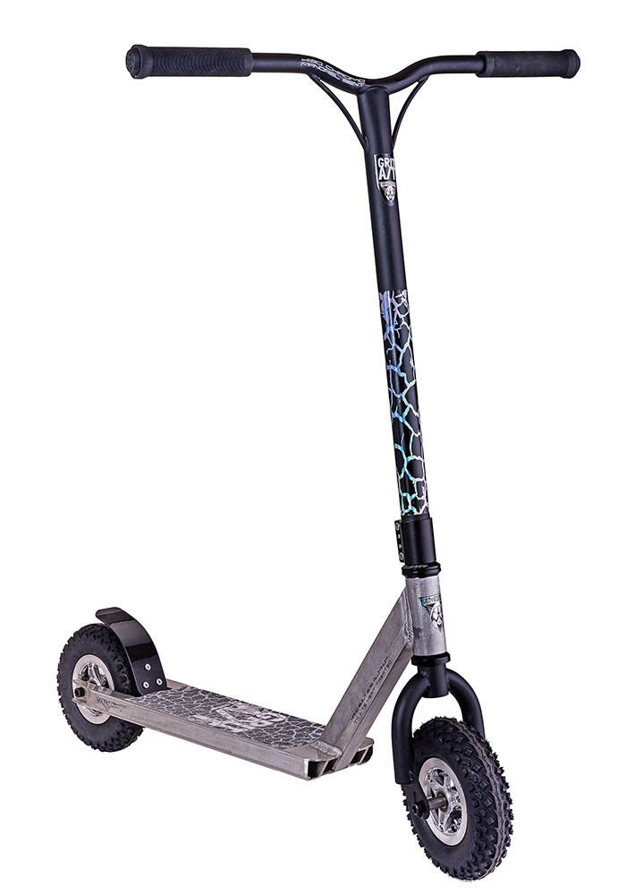

A great developer knows more than <code/>
Paul Heasley
@pheasley
http://phdesign.com.au
It's a competitive industry
Lots of people know how to write code
Few know how to produce software to solve business problems
Picture your career as a skill tree
Start broad, expand your options
Discover your interests and strengths
Choose a speciality
Sometimes your hobbies should stay a hobby
Find a role model
Choose your roles strategically
Learn user empathy
Use the product
Read comments and complaints
Talk to product owners
Do first line support
Perform user research
You built

They wanted
Estimation is a big part of development
Never, ever give unqualified estimates
Don't give estimates in perfect days
Plan for 4 hours / day of real development
Understand the scope
Break it into tasks
Verify it with a colleague
Double it!
Don't estimate
Use story points, measure velocity
It's about balance
Conciseness
if (!el.offsetWidth || !el.offsetHeight) {
...
} vs.
readability
function isVisible(el) {
return el.offsetWidth && el.offsetHeight;
}
if (!isVisible(el)) {
...
} Quality
vs.
Time to market
Don't over-engineer it
Single responsiblity principle
a class should have only a single responsibility
Make it extensible
software should be open for extension, but closed for modification